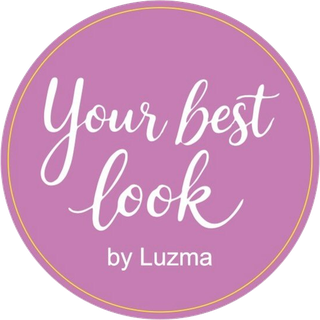

Fría · intensa
Invierno
Contrastes fuertes, como la noche oscura sobre la nieve. Colores puros y plateados.

Your Best Look by LuzmaMasterclass online de imagen y estilo
Te enseño a leerlo.
Descubre cómo las características de tu rostro te ayudan a elegir las líneas, tamaños, estampados, texturas, proporciones y colores que más te favorecen.
Aprende a reconocerlos desde casa, frente a un espejo, y deja de adivinar frente al clóset.
$89 $80 USD · pago único · garantía de 7 días
▶ La clase de Luzma · 6 min
Sé honesta
¿Tienes el clóset lleno y la sensación constante de «no tengo qué ponerme»?
¿Has visto una prenda increíble en el maniquí y te has decepcionado al probártela?
¿Has intentado recrear un look que te encantó en una influencer o en tu mejor amiga, pero en ti no luce igual?
¿Te ha pasado que un color que te encanta termina haciéndote lucir apagada o cansada?
¿Te pruebas diferentes prendas y terminas usando siempre las mismas?
¿Te miras al espejo sintiendo que algo no funciona, pero sin saber exactamente qué ajustar?
¿Te concentras más en disimular ciertas partes de tu cuerpo que en destacar lo que te favorece?
¿Tu clóset está lleno de compras de oferta que casi nunca utilizas?
Hermosa, el problema no eres tú. Es que nadie te dio tu instructivo.
Durante años nos enseñaron a corregirnos
Si tu rostro es redondo, alárgalo.
Si es alargado, acórtalo.
Si tienes curvas, disimúlalas.
Si eres angulosa, suavízate.
La armonía no está en cambiar tus formas, sino en comprenderlas y expresarlas con libertad. Tu construcción natural es la que permanece más allá del tiempo, incluso cuando tu peso cambia o tu estilo evoluciona. Encuentra aquí tu mapa.
Lo que nadie te había dicho
En estampados, en aretes, en collares, en solapas, en cuellos, en texturas y hasta en corte de cabello. Esa talla no la decide tu estatura, ni tu peso, ni tu edad, ni la moda. La decide tu rostro.
"Cuando el estampado es más grande de lo que te corresponde, tu rostro visualmente se encoge y pasa a segundo plano."Luzma · Capítulo 2
El método Your Best Look
Cuando respetas cada detalle, tu imagen cobra sentido.
En Your Best Look descubrirás, a lo largo de siete capítulos, cómo reconocer y armonizar tus características para desarrollar un estilo auténtico, único y fiel a ti misma.
En la naturaleza solo hay dos: rectas y curvas. Todas tenemos ambas, pero una predomina. Las rectas comunican elegancia y firmeza; las curvas, suavidad y feminidad.
De petite a extra grande, descubre cómo tu rostro y tus facciones determinan los tamaños que mejor se integran contigo, para que seas tú quien destaque y no lo que llevas puesto.
Aunque no seas su fan, aquí descubrirás sus secretos y su importancia. ¡Te garantizo que los verás con otros ojos!
Para algunas, menos es más; para otras, más es mejor. Descubre cuántos elementos visuales puedes combinar sin perder tu equilibrio y tu belleza.
Suaves, ligeras, gruesas o con cuerpo. Descubre cómo las diferentes texturas pueden transformar tu apariencia.
Este es un punto medular de Your Best Look y aquí te apoyo a encontrarlo, pulirlo o terminar de definirlo.
Sin reglas complicadas, aprenderás de forma sencilla y lógica a reconocer las proporciones de tu cuerpo y a utilizar recursos visuales para equilibrar y favorecer tu figura.
Fríos o cálidos. Intensos o suaves. Encuentra la gama de colores que inspire a otros a decirte: «¡Qué bien te ves!»
El curso que te servirá para toda tu vida.
Capítulo 5 · La magia del color
La naturaleza tiene cuatro estaciones y, como parte de ella, tu colorido natural pertenece a una de ellas.
El tono de tu piel, el color de tus ojos y el color natural de tu cabello forman una combinación única.
Cuando integras los colores de tu propia estación, la gente no sabrá qué te hiciste, pero la inspirarás a decir: ¡Qué bien te ves!
Fría · intensa
Contrastes fuertes, como la noche oscura sobre la nieve. Colores puros y plateados.
Fría · suave
Cabello cenizo, contraste suave. Imagina los colores vistos a través de la lluvia.
Cálida · intensa
Destellos cobrizos y dorados. Ocres, terracotas y verde olivo, como las hojas de un árbol canadiense durante esa estación.
Cálida · suave
Un colorido fresco, cálido y luminoso que evoca el despertar de la naturaleza. Corales delicados, verdes frescos y tonos durazno aportan luz y armonía.
Cara lavada, cabello recogido y dos hojas de color: fucsia y naranja. Si eres de colores fríos, el fucsia resalta tu contraste natural. Si eres cálida, el naranja te suaviza y te da luz. Y un regalo de adelanto: el azul turquesa y el morado obispo le favorecen prácticamente a todo el mundo.
Cada estilo tiene características que lo distinguen y una manera particular de expresarse.
Al final descubres cuál eres
Petit
¿Represento esa dulzura?
Rasgos finos y delicados. Pero cuidado: inocente, nunca boba.
Chico
¿Me veo cómoda?
Relajada y natural. Pero cuidado: cómoda no significa descuidada.
Mediano curvo
¿Me veo divertida?
Versátil, con movimiento y asimetrías. Original, nunca ridícula.
Mediano recto
¿Reflejo esa elegancia?
Clásica y minimalista. Elegancia no es rigidez; formal no es anticuada.
Grande curvo
¿Qué tan bien la represento?
Extremadamente femenina e incluso sexy. Pero nunca sobrecargada.
Grande recto
¿Me veo nice?
Distinguida y vanguardista. Toma lo más chic de la moda, sin verse falsa.
Extra grande recto
¿Estoy expresando mi glamour?
Su enorme elegancia, refinamiento y sofisticación se hace evidente, pero cuidado: no requieres intimidar.
Y tú…
Reconoce tu personalidad y descubre cómo sacarle el mejor partido a tu imagen. ¡Te espero en el capítulo 3!
Masterclass completa
Cada capítulo está diseñado para llevarte de la mano, avanzando paso a paso, con imágenes prácticas que facilitan tu comprensión y un PDF de apoyo para reforzar lo aprendido.
Honestidad ante todo

Tu guía
Tengo 64 años. Estudié diseño gráfico en la Universidad Iberoamericana, y desde hace más de tres décadas me dedico a crear belleza a través de la imagen personal.
Cuando empecé, en México había muy poquita información sobre este tema, así que complementé mi formación en Nueva York y Milán. Pero mi mejor escuela ha sido la experiencia: he aplicado estas técnicas innumerables veces con mujeres de distintas edades y contextos, comprobando su efectividad en cada una de ellas.
En todas descubrí lo mismo: nadie tiene nada que corregir y sí mucho que expresar. Por eso, no voy a decirte qué ponerte, sino a darte las herramientas para identificar cada detalle que te favorece y elegir sin depender de nadie, solo de ti misma.
Tu inscripción
30 años de experiencia resumidos en un solo curso: sin segundas partes. ¡Ahorra lo que gastarías en varias asesorías personalizadas y disfruta de acceso de por vida!
Garantía total de 7 días. Entra, ve los capítulos y haz tus pruebas frente al espejo. Si sientes que no es para ti, pides tu reembolso completo. El riesgo es mío.
Masterclass completa de imagen y estilo
Pago seguro con Hotmart · Tarjeta, PayPal y más
Dudas
En redes encuentras consejos generales. En Your Best Look aprenderás a observar tus propias características, descubrir cómo se relacionan entre sí y reconocer los detalles que hacen la diferencia en tu imagen. No se trata de seguir consejos, sino de comprender qué funciona para ti y por qué.
Your Best Look no te encasilla en estándares generales ni fórmulas preestablecidas. Te enseña a descubrir lo que te favorece a partir de las características únicas de tu rostro, con un método desarrollado y perfeccionado a lo largo de más de 30 años de experiencia.
Primero, porque te cuesta muchísimo menos que una asesoría individual. Segundo, porque Your Best Look solo tendrás que pagarlo una vez. A partir de ahí, contarás de por vida con las herramientas y el criterio necesarios para reafirmar o evolucionar tu estilo de forma autónoma, en cualquier etapa de tu vida.
¡No tienes por qué renunciar a ellas! En Your Best Look aprenderás a jugar con los detalles para integrarlas a tu estilo de manera armoniosa. Recuerda que no se trata de seguir reglas ni prohibiciones, sino de conocerlas para elegir libremente, en pro de tu belleza.
¡Por supuesto que no! Your Best Look te ayudará a descubrir nuevas posibilidades para adaptarlo a lo que ya tienes, aprovechar mejor tus prendas y accesorios y hacer cambios únicamente si tú lo eliges. ¡No se trata de cambiar quién eres, sino de afinar y potenciar tu belleza y tu estilo!
¡Tu clóset será tu mejor laboratorio! Descubrirás nuevas combinaciones y aprenderás a jugar con los detalles para favorecer tu rostro y reflejar tu personalidad. ¡Aprovecharás al máximo lo que ya tienes y aprenderás a elegir mejor tus próximas compras!
¡Desde el primer capítulo podrás comenzar a aplicar lo aprendido! Avanza a tu propio ritmo, realiza los ejercicios y descubre cómo pequeños detalles pueden hacer una gran diferencia en tu imagen. En pocas palabras, ¡dependerá absolutamente de ti!
Your Best Look está diseñado para que aprendas de forma clara, sencilla y autónoma. Cada capítulo incluye explicaciones visuales, ejercicios y materiales de apoyo que te ayudarán a comprender y aplicar lo aprendido. ¡Créeme, mis 30 años de experiencia los verás reflejados en cada detalle del curso!
El pago es seguro a través de Hotmart, con tarjeta y otros métodos según tu país. Al terminar recibes tu acceso por correo de inmediato.
Tienes 7 días de garantía. Si sientes que no es para ti, solicitas tu reembolso completo desde Hotmart. Sin preguntas.
Y tú eres el original.
El primer paso ya lo diste: llegaste hasta aquí. El siguiente es atreverte. Porque cambiar es evolucionar, y es un proceso hermoso.
$89 $80 USD · acceso inmediato · garantía de 7 días